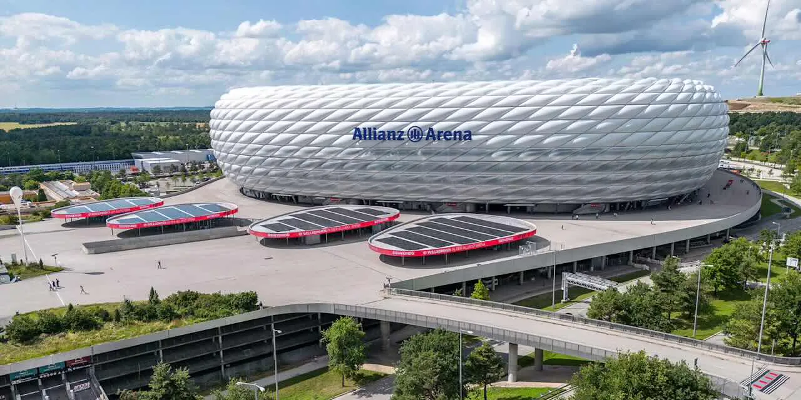

Allianz Arena to jeden z najbardziej znanych stadionów piłkarskich w Niemczech. Znajduje się w Monachium. Jest domem klubu Bayern Monachium. Stadion został otwarty w 2005 roku. Jest znany z charakterystycznej podświetlanej fasady. Pojemność stadionu wynosi około 75 tysięcy widzów. Stadion jest jednym z najnowocześniejszych w Europie. Na stadionie odbywały się mecze Mistrzostw Świata 2006. W 2012 roku odbył się tam również finał Ligi Mistrzów. Stadion jest często odwiedzany przez turystów. Stadion stale przyciąga miliony fanów piłki nożnej. Allianz Arena pozostaje jednym z najbardziej imponujących stadionów na świecie.